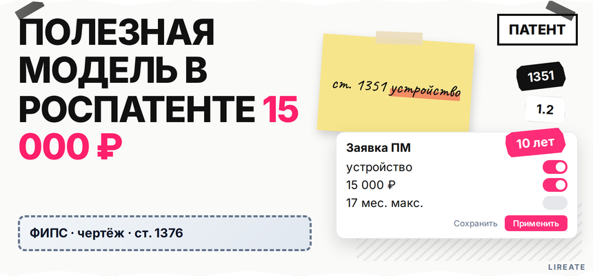
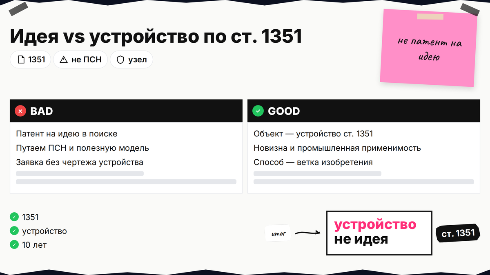
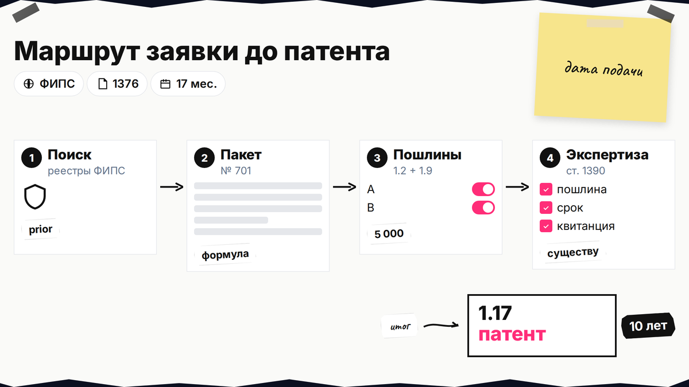
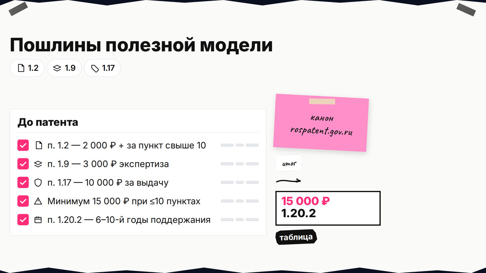

Вы ищете патент на полезную модель в Роспатенте, а в поиске подсовывают "запатентовать идею", патент самозанятого и товарный знак. На практике охрана по ст. 1351 ГК РФ даётся на устройство с новизной и промышленной применимостью, не на мысль и не на способ. Ниже вы отделите полезную модель от изобретения, соберёте пакет по ст. 1376, оплатите пошлины по таблице Роспатента и пройдёте экспертизу без обещаний "гарантированного патента".

TL;DR / Быстрый инсайт: Полезная модель - охрана технического решения устройства (ст. 1351): нужны новизна и промышленная применимость, без изобретательского уровня. Срок - 10 лет (ст. 1363). Минимум до электронного патента при ≤10 пунктах формулы: 2 000 + 3 000 + 10 000 = 15 000 ₽ (пп. 1.2, 1.9, 1.17 на rospatent.gov.ru). Экспертиза по существу для ПМ идёт автоматически после формальной (ст. 1390).
Гайд для изготовителя с прототипом. Нормы на 11.11.2026; не заменяет поверенного, исход заявки не предрешаем. Выбор между патентом, секретом и публикацией - в материале о способах защиты изобретения; здесь только полезная модель.

Запросы вроде "запатентовать идею" ведут к изобретениям, товарным знакам и ПСН. Патент на полезную модель - это исключительное право на устройство: корпус, узел, крепление, приспособление. Чистый способ ("как собирать" без новой конструкции) - объект изобретения, не ПМ.
| Критерий | Полезная модель | Изобретение (кратко) |
|---|---|---|
| Объект | Устройство (ст. 1351 п. 1) | Техническое решение в любой области (ст. 1350) |
| Патентоспособность | Новизна + промышленная применимость | + изобретательский уровень |
| Срок | 10 лет с даты подачи | 20 лет |
| Экспертиза по существу | После формальной, без ходатайства | По ходатайству, до 3 лет (ст. 1386) |
| Льгота после собственного раскрытия | 6 месяцев (п. 3 ст. 1351) | 12 месяцев (п. 3 ст. 1350) |
Делайте: сформулировать, какой физический узел вы защищаете. Не делайте: подавать ПМ на алгоритм, бренд или "идею продукта" без конструкции.
Новизна - совокупность существенных признаков не известна из уровня техники. Промышленная применимость - устройство можно сделать и использовать. Изобретательский уровень для ПМ не проверяют.
После публичного показа на ПМ остаётся 6 месяцев на подачу (п. 3 ст. 1351); у изобретения - 12 месяцев, сроки не смешивайте.
Делайте: искать аналоги до публикации. Не делайте: полагать, что мелкая доработка чужого узла автоматически новая.

На странице госуслуги предельный срок - 17 месяцев 2 недели, формальная экспертиза - до 2 месяцев после пошлин. Это потолок регламента, не средний срок из рекламы.
Workflow: поиск в ФИПС → пакет по ст. 1376 → подача (УКЭП/приёмная) → 1.2+1.9 → формальная → по существу (ст. 1390) → 1.17 → патент 10 лет
Делайте: сохранять квитанции с УИН. Не делайте: тянуть с ответом на запрос экспертизы дольше 3 месяцев.
Состав заявки - ст. 1376: заявление, описание, формула, чертежи (если без них нельзя понять решение), реферат. Детали разметки - Приказ Минэкономразвития № 701.
| Документ | Зачем | Типичная ошибка |
|---|---|---|
| Заявление | Данные заявителя, ссылка на ПМ | Неверный правовой статус иностранца без поверенного |
| Описание | Раскрытие решения по разделам № 701 | Рекламный текст вместо техники |
| Формула | Один независимый пункт + зависимые; объём охраны | Несколько независимых пунктов "на всякий случай" |
| Чертежи | Поясняют конструкцию | Нет ссылок в описании на листы чертежей |
| Реферат | Краткое изложение для бюллетеня | Признаки, которых нет в формуле |
Шаблон заявления - в online.rospatent (канон - rospatent.gov.ru). Единство заявки - одна полезная модель; "склеивать" несвязанные узлы рискованно.
Делайте: проверить, что каждый существенный признак в формуле есть в описании. Не делайте: копировать маркетинговый слоган в независимый пункт.

Цифры ниже - только из Положения о пошлинах (канон - таблица на rospatent.gov.ru; на 11.11.2026). Для льготных категорий смотрите приложение № 2 на той же странице.
| Пункт | Назначение | Сумма (база) |
|---|---|---|
| 1.2 | Регистрация заявки + формальная экспертиза | 2 000 ₽ + 1 000 ₽ за пункт формулы свыше 10 |
| 1.9 | Решение по экспертизе по существу ПМ | 3 000 ₽ |
| 1.17 | Регистрация, публикация, электронный патент, годы 1-5 | 10 000 ₽ |
| 1.18.1 | Патент на бумаге (по ходатайству) | 3 000 ₽ |
| 1.20.2 | Поддержание 6-10-й годы (от даты подачи) | 3 000 / 4 000 / 4 000 / 6 000 / 6 000 ₽ |
Минимум до электронного патента при ≤10 пунктах: 15 000 ₽ (2 000 + 3 000 + 10 000). Пошлины 1.2 и 1.9 платят вместе до старта экспертизы по существу. С 01.01.2027 п. 1 ст. 1351 меняется (примечание Консультант) - перед подачей в 2027 сверьте редакцию.
Делайте: планировать п. 1.20.2 на 6-10-й годы. Не делайте: копировать пошлины из блогов без таблицы Роспатента.
Резидент ведёт дела сам (п. 1 ст. 1247); иностранцу обычно нужен поверенный (п. 2). Подача - ФИПС/Госуслуги с УКЭП или приёмная; FAQ - online.rospatent.
При отказе - что делать после отказа в патенте; при чужой заявке конкурента - возражение против выдачи патента. Сложный пакет - сопровождение патентования на Лирейт без обещания решения Роспатента.
Делайте: вести таблицу писем ФИПС с дедлайнами. Не делайте: игнорировать запрос, надеясь "само закроется".
Сверьте стратегию охраны с патентом, ноу-хау или публикацией, при споре о чужой заявке - возражение против выдачи патента конкуренту. Сопровождение заявки - патентование на Лирейт; объект "способ" - изобретение.
Кратко опишите устройство и стадию (чертёж, заявка, ответ на запрос ФИПС). Подскажем следующий шаг без гарантии регистрации.
Материал проверен: редакция Лирейт; ст. 1351, 1363, 1376, 1390, 1247 ГК РФ; Приказ № 701; пошлины пп. 1.2, 1.9, 1.17, 1.18.1, 1.20.2 - таблица Роспатента.
Достоверность данных: 11.11.2026. Показы Яндекс Вордстат не включались (MCP недоступен).
Нет. Нужно техническое решение устройства с описанием и формулой (ст. 1351). Идея без конструкции не подаётся; способ оформляют как изобретение, бренд - отдельным треком товарного знака.
Проще по критериям и автоматической экспертизе по существу (ст. 1390). Слабее по сроку (10 лет) и не охраняет способ. Сравнение - патент, ноу-хау или публикация.
При ≤10 пунктах формулы и электронном патенте ориентир 15 000 ₽: п. 1.2 (2 000 ₽) + 1.9 (3 000 ₽) + 1.17 (10 000 ₽) по таблице Роспатента. Бумажный патент +3 000 ₽ (п. 1.18.1).
Не обязателен: резидент ведёт дела сам (п. 1 ст. 1247). Иностранцу без поверенного обычно нельзя. Поверенный экономит время при сложной формуле и запросах ФИПС.
Заявление, описание, формула, чертежи (если нужны для понимания), реферат (ст. 1376). Структура разделов - Приказ № 701.
6 месяцев с даты вашего раскрытия, если хотите сохранить льготу (п. 3 ст. 1351). У изобретения - 12 месяцев; не путайте в календаре.
10 лет со дня подачи заявки (ст. 1363). Дальше - пошлины п. 1.20.2 за 6-10-й годы или прекращение прав.